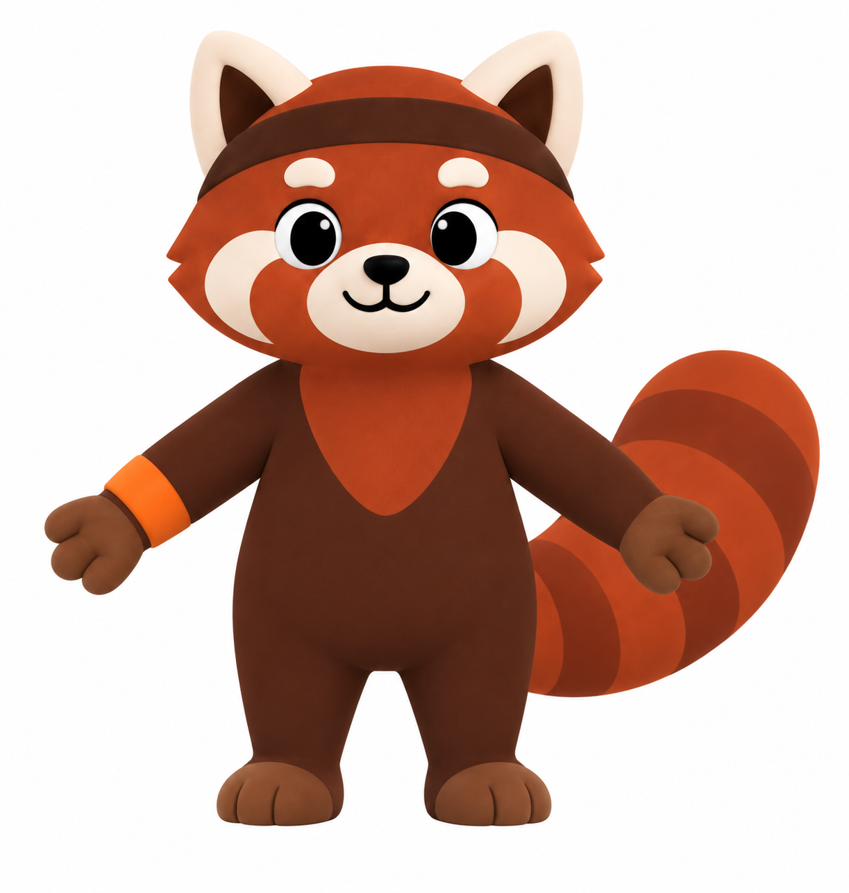

Теперь
в движении.
Та самая красная панда.
С характером и тёмной повязкой.

к объёму
Поворачивайте панду, приближайте и пробуйте движения. Всё можно рассмотреть со всех сторон.
Об эксперименте и файлахЗагружаю панду…
Привет, я рядом.
Выберите движение